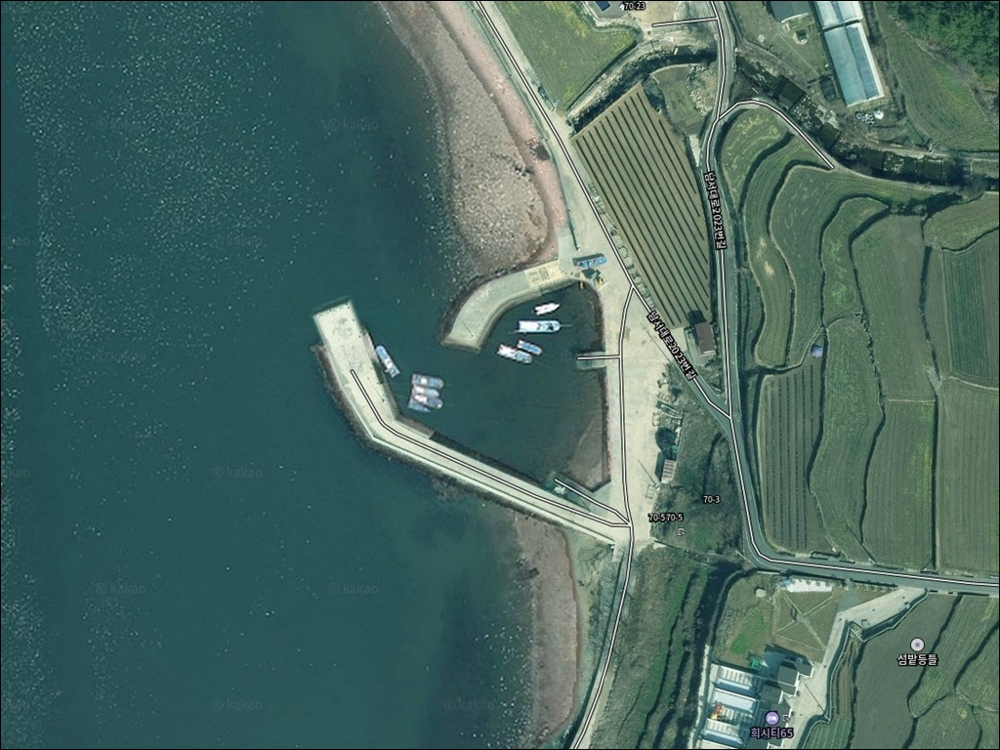
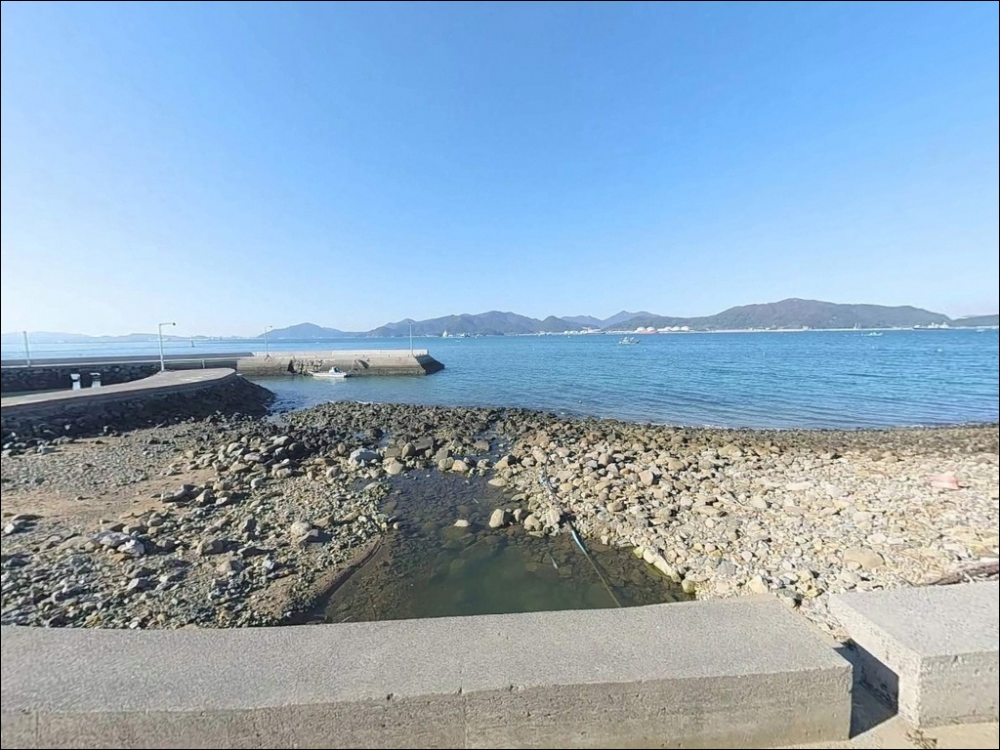
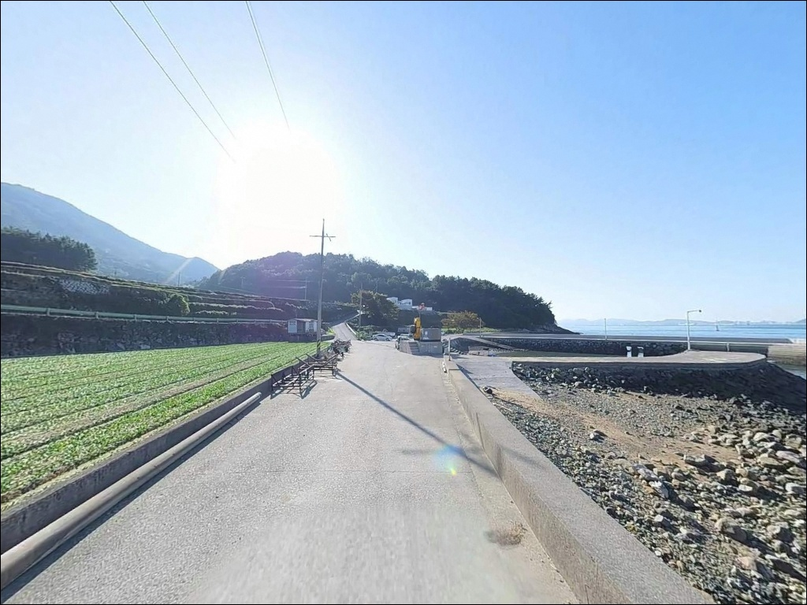
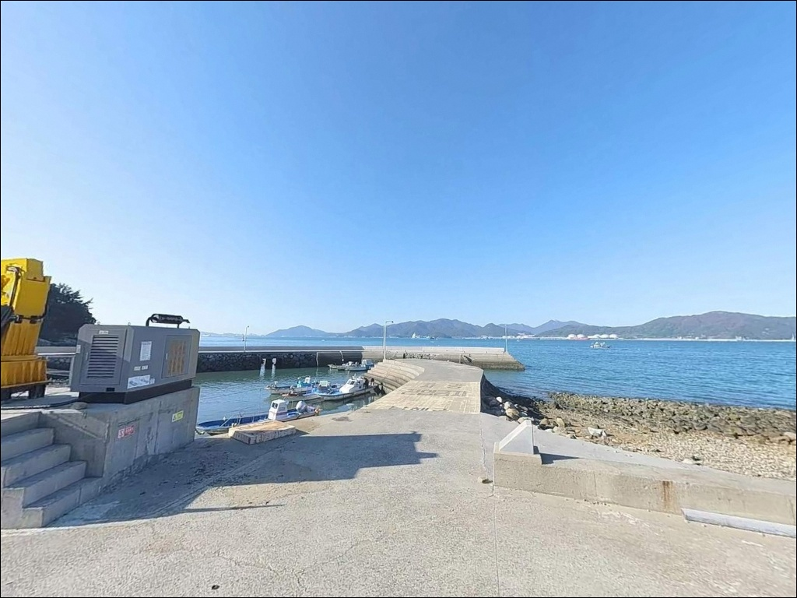
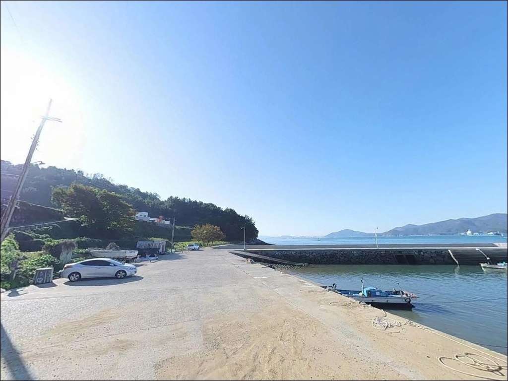
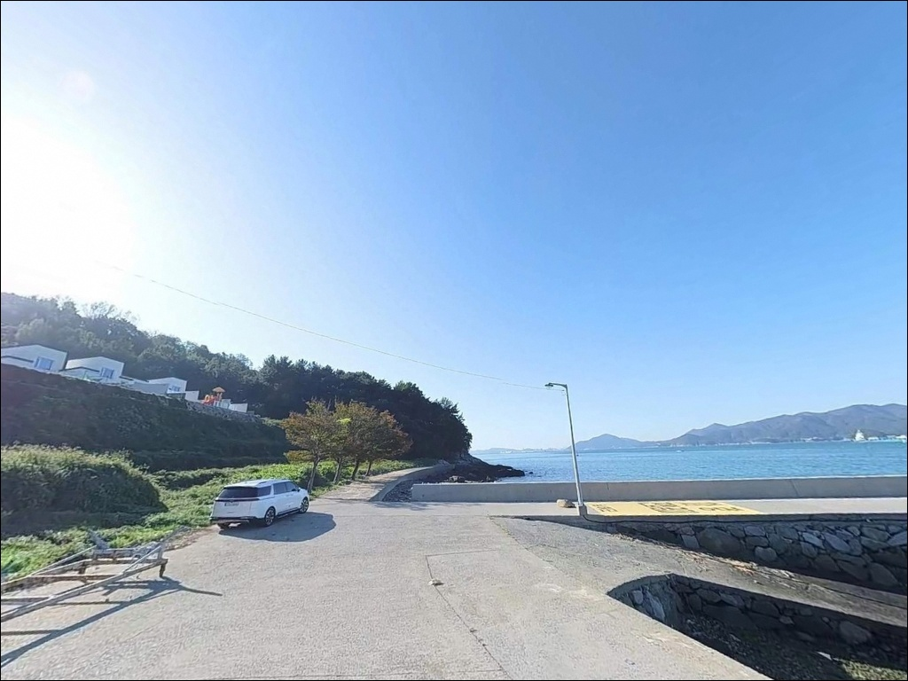
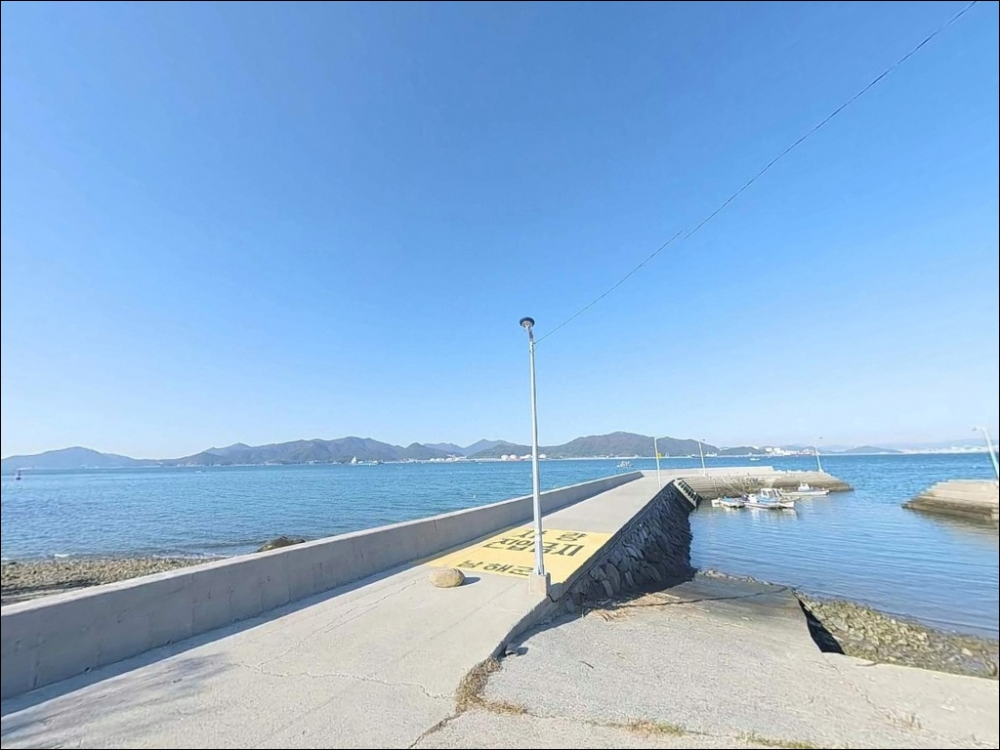
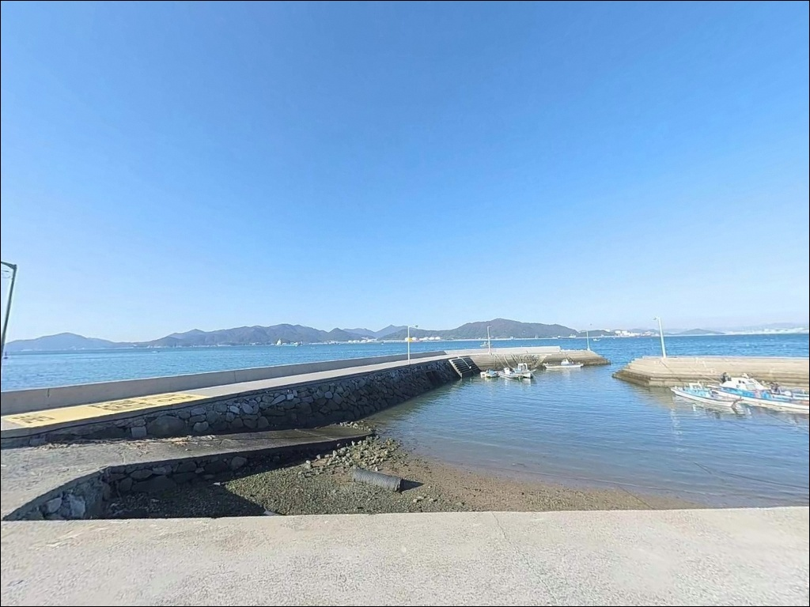
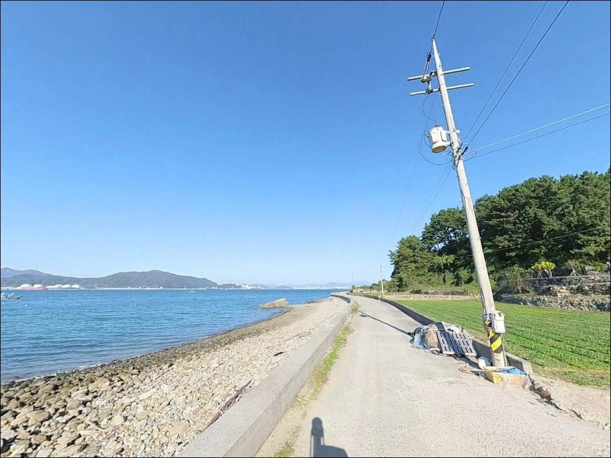

수심 얕은 남해 작장리방파제 낚시, 초들물 중날물 타임에 몰린 입질
이 페이지에는 광고(제휴 링크 포함)가 있으며, 광고 링크를 통해 구매하면 운영자가 판매 수익 또는 수수료를 받을 수 있습니다. 포인트 사진: 카카오맵 스카이뷰·로드뷰. 이 페이지의 지도·사진 이미지는 카카오맵의 실제 서비스 이미지와 다를 수 있습니다.


포인트 안내
작장리방파제
경남 남해군 서면 작장리 1496-3
간조 전후에 작장리방파제를 찾으면
입구 쪽 수심이 낮아져
채비를 넣을 자리 자체가 줄어듭니다.
이 포인트는 수심이 전반적으로 얕은 구조라
초들물에서 중날물 사이 타이밍에
조과가 집중되는 패턴을 가진 방파제입니다.
경남 남해군 서면 작장리,
남해도 서쪽 해안선을 따라 이어지는
조용한 어촌 마을 끝에 자리한 소형 방파제입니다.
왼쪽 85m, 오른쪽 40m 두 방파제가
작은 내항을 감싸는 구조이며,
노량해협과 광양만 접경 수역에 면해
조류 흐름이 살아 있는 남해 북부 생활낚시 포인트입니다.
이 글은 작장리방파제의
진입 동선, 차박 여건, 물때 판단 기준,
낚시 스타일별 공략 조건에 집중합니다.
조황 단정이나 특정 어종 보장은
이 글의 범위에 포함되지 않습니다.

1. 진입 동선과 포인트 접근성
남해 서면 해안도로(남서대로)에서
작장마을 방향으로 우회전하면
아스팔트 포장 마을길이 방파제까지 이어집니다.
전 구간 포장 상태이며 급경사 구간은 없지만,
마을 안쪽으로 들어갈수록
도로 폭이 좁아지는 구간이 나타납니다.
마을 끝자락의 좁은 회전 구간은
대형 SUV나 캠핑 장비를 갖춘 차량이라면
서행과 사전 확인이 필요한 구간입니다.
방파제 입구에 소형 공터가 형성되어 있어
소형차 기준 3~4대 수준의 주차가 가능하며,
마을 끝 해안도로 갓길도 주차 후보지로
활용할 수 있습니다.
방파제 입구와 마을 끝 공간에서
회차가 가능한 구조입니다.
대형 캠핑카 또는 장축 차량은
마을 진입 전 회차 여부를
위성지도로 먼저 확인하고 가는 편이 안전합니다.

2. 차박 환경과 야간 체류 여건
작장마을은 민가가 방파제와 가까이 붙어 있는
소규모 어촌 구조입니다.
야간에는 차량 통행이 거의 없는 편이지만,
민가와의 거리가 가까워
소음과 차량 조명 관리가 필수입니다.
가로등이 일부 설치되어 있어
완전 암흑 환경은 아닙니다.
다만 방파제 끝단 쪽은 조명 범위 밖으로
어두운 편이어서 개인 헤드랜턴은
반드시 챙겨야 합니다.
방파제 입구 공터 주차 후
어민 통행 동선을 방해하지 않는 자리를
우선 확보하는 것이 기본 매너입니다.
낚시 후 조용히 하룻밤 머무는 스텔스 차박 용도로는
여건이 나쁘지 않습니다.
다만 주차 공간이 협소한 만큼
여러 대가 함께 이동하는 경우라면
인근 서상항 방향의 넓은 주차 공간을
베이스로 삼는 편이 현실적입니다.


3. 주변 편의시설 및 인프라 현황
작장리방파제 반경 1km 이내에는
편의점이나 식당을 기대하기 어렵습니다.
완전 자급 체제로 진입하는 것이
현실적인 준비 방식입니다.
식수, 얼음, 낚시 소품, 연료 모두
출발 전에 갖추는 편이 좋습니다.
반경 3km권에서는
남서대로를 따라 이동하면
편의점 1~2개소와 서상리 일대 식당에
닿을 수 있습니다.
차량 기준 5분 내외 거리의
사촌해수욕장 인근 편의시설도
활용 가능한 거점입니다.
응급 상황 발생 시
남해읍 방향 남해군보건의료원까지
차량으로 15~20분 거리입니다.
출발 전 연료, 비상약품, 식수 준비를
철저히 갖추고 가는 것이 기본입니다.

4. 조과를 결정하는 방문 전 준비사항
작장리방파제를 방문하기 전
가장 먼저 확인할 것은 물때입니다.
이 포인트는 전반적으로 수심이 얕아
간조 전후 입구 쪽은 낚시 불가 구간이 발생합니다.
바다타임에서 서면 일대 물때를 확인하고
초들물에서 중날물 사이 타이밍에
맞춰 출발 시각을 계획하는 것이 기본입니다.
남해도 서면은 노량해협 영향권에 속해
기상 변화가 빠른 편입니다.
기상청 예보를 출발 당일 아침 다시 확인하고,
북서풍이 강한 날에는
외항 방향 발판 상태를 더 주의해야 합니다.
여분 채비는 넉넉하게 준비하는 편이 좋습니다.
작장항은 어선이 실제로 이용하는 선착장입니다.
어선 이동 동선과 어구에 접촉하지 않도록
자리를 잡는 것이 기본 매너이며,
야간에는 구명조끼와 헤드랜턴을
반드시 챙겨야 합니다.

5. 지형 기반 낚시 여건 분석
작장리방파제는 왼쪽 85m, 오른쪽 40m의
두 방파제가 소형 내항을 감싸는 구조입니다.
내항은 선착장 형태로 수심이 얕고 잔잔하며,
주력 포인트는 외항 끝단입니다.
노량해협 접경 수역에 면해 있어
밀물·썰물 시 조류 흐름이 뚜렷하게
살아나는 구간이 형성됩니다.
바닥은 펄과 모래·패각류가 혼합된 구조로
전반적으로 험하지 않아 밑걸림이 적은 편입니다.
오른쪽 방파제 외측으로는
갯바위 방향 원투 캐스팅이 가능한 구간이 있고,
끝단 12~1시 방향으로
릴찌를 조류에 태우는 패턴이
이 포인트의 대표적인 공략 방식입니다.
수심은 얕은 편이지만
방파제 끝단 외항 쪽에서는
수심이 급변하는 구간이 형성되어 있어
멀리 던질수록 기대할 수 있는
바닥 여건이 달라집니다.
야간에는 방파제 전 구간에서
볼락 반응을 기대해 볼 수 있으며,
가을 시즌에는 갑오징어 유입 패턴도
이 해역에서 확인되는 편입니다.
출조 전 최신 조황은
반드시 별도로 검색해 보시기 바랍니다.


6. 작장리방파제에 어울리는 낚시 스타일
이 포인트 구조에 가장 잘 맞는 방식은
원투낚시입니다.
바닥이 비교적 깨끗한 펄·모래 혼합 구조라
밑걸림 부담이 적고,
오른쪽 방파제에서 갯바위 방향으로
최대한 멀리 채비를 날리는 방식이 효과적입니다.
도다리, 붕장어, 노래미류를
바닥층에서 기대해 볼 수 있는 구조입니다.
릴찌낚시도 이 포인트 지형 조건과 잘 맞습니다.
방파제 끝단에서 조류 방향으로
채비를 흘리는 기본 패턴이 안정적이며,
조류가 살아나는 초들물~중날물 구간에
입질이 집중되는 패턴을 보입니다.
감성돔은 이 해역에서 가을 시즌에
유입이 확인되는 어종입니다.
볼락 라이트게임은
야간 방파제 전 구간에서 운영이 가능합니다.
소형 지그헤드 채비로
방파제 기저부와 끝단 주변을
천천히 탐색하는 방식이 기본입니다.
11월 이후 씨알이 올라오는 경향이 있으며,
야간 볼락 라이트게임은
초보 낚시인도 부담 없이
운영할 수 있는 방식입니다.

7. 대안 포인트와 플랜 B 동선
작장리방파제 조류가 너무 강하거나
주차 공간이 여의치 않을 때
첫 번째 대안은 서상항입니다.
차량 기준 2~3km 거리로 가깝고,
남해도 서면 최대 어항 구조로
방파제 발판이 안정적이며
주차 공간도 넉넉한 편입니다.
서면 북쪽 방향으로 3km권에
남상방파제가 있습니다.
작장리방파제보다 규모가 큰 편이며
진입과 주차 여건이 안정적입니다.
동일 서면 해역 패턴을 공유하고 있어
원투와 릴찌 방식을 그대로 적용할 수 있는
대안 포인트입니다.
남해 서면 일대를 연계 출조 코스로 묶는다면
서상 빨간등대 방파제(약 3.6km),
홍현방파제(약 4~5km)도
같은 날 함께 돌아볼 만한 방파제들입니다.
차박 대안 거점으로는
사촌해수욕장 주차 공간이 편의시설과
화장실 접근이 용이한 선택지입니다.

물때만 맞추면
작장리방파제는 조용하고 괜찮은 자리입니다
원투낚시나 릴찌낚시를 즐기는 낚시인이라면
작장리방파제의 지형 조건은
큰 부담 없이 운영할 수 있는 구조입니다.
바닥이 비교적 깨끗하고,
외항 끝단에서 조류를 활용하는
기본 공략 패턴이 잘 통하는 곳입니다.
다만 수심이 얕은 포인트인 만큼
물때 확인 없이 간조 전후에 도착하면
낚시 공간 자체가 좁아지는 상황을
맞닥뜨릴 수 있습니다.
물때 확인, 자급 준비, 마을길 서행,
이 세 가지를 갖추고 간다면
남해 서면의 한적한 소형 방파제를
여유 있게 즐길 수 있는 포인트입니다.
볼락 라이트게임 야간 낚시 후
방파제 입구 공터에서 조용히 하룻밤 머무는
스텔스 차박을 계획하는 낚시인이라면,
민가 배려와 쓰레기 반출만 철저히 지킨다면
낚시와 차박을 함께 마무리하기 좋은
출조가 될 수 있는 곳입니다.